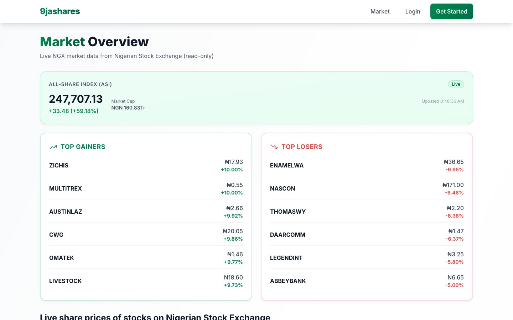

9jashares — Financial Trading Platform
Production full-stack trading web platform built from scratch at Fingletek


Overview
9jashares is a production financial trading web platform that provides digital workflows around market information, user and broker accounts, portfolio-related experiences, and transaction-oriented investment/trading flows for Nigerian capital-market contexts.
I independently built the platform from scratch as part of my work at Fingletek—covering frontend implementation, backend functionality, APIs, persistence, integrations, UX, deployment, debugging, and ongoing maintenance. This page describes the engineering work behind the product, not promotional metrics or regulatory claims.
The Product
Public product surfaces include a marketing site at 9jashares.com and the trading application at trading.9jashares.com. Observable capabilities include:
- Responsive public presentation of trading-oriented product messaging and navigation
- Market exploration entry points, including NGX-oriented market browsing flows
- Account pathways for end users and broker onboarding/registration
- Login and authentication-oriented access into the trading application
- Portfolio-oriented and broker-integration product workflows as presented in the public UI
- FAQ and guidance around registration, trading, fees, and related platform processes
9jashares is described here as a trading web platform that connects investors with licensed brokers and market information. It is not described as a stock exchange, bank, or regulated financial institution.
The Problem / Product Need
Investors and brokers needed a coherent digital product for discovering market information, entering account workflows, and carrying trading-oriented actions through a maintainable web experience—rather than fragmented static pages or disconnected tools.
The engineering challenge was to design and deliver a full production application: customer-facing interfaces, backend workflows, persistence, integrations with external/internal services, and deployable software that could evolve in production.
What I Built
I designed and built the application end to end as a production product:
- Responsive customer-facing frontend for marketing and trading application experiences
- Backend application functionality and API-oriented workflows
- Persistence and data handling supporting account, market, and transaction-oriented flows
- Integrations connecting UI, application services, and external/broker-related pathways
- Production deployment, debugging, and ongoing maintenance/improvements
My Contribution
I independently built 9jashares from scratch as part of my work at Fingletek. My ownership covered the application end to end:
- Designed and implemented the responsive frontend and user workflows
- Built backend application functionality and APIs
- Implemented persistence and data-oriented application behaviour
- Integrated frontend, backend, and external/internal service pathways required by the product
- Implemented UX for market, account, portfolio-oriented, and trading-related flows visible in the public product
- Deployed the platform and maintained it through debugging, fixes, and iterative improvements
This ownership covers the software product. It does not claim ownership or operation of underlying market venues, broker infrastructure, or third-party financial services.
Product Architecture / Application Flow
At a high level, the product follows a full-stack application flow. The diagram below is a conceptual summary of how the customer experience connects to application logic and external pathways—not a literal internal infrastructure blueprint.
Responsive marketing and trading application UI
Backend services powering product workflows
Accounts, market, portfolio-oriented, and trading flows
Stored application state and service connections
Broker-related and financial-service integrations
Frontend & User Experience
I implemented the responsive customer-facing frontend and interaction flows across the public site and trading application. Publicly observable UX work includes:
- Responsive layout and navigation across marketing and application surfaces
- Presentation of market and investment-oriented information
- User and broker account entry points, including registration and login flows
- Portfolio-oriented and trading-oriented interaction pathways as exposed in the product UI
- API-integrated UI states that connect the interface to backend application behaviour
The trading application is delivered as a Next.js (React) web app, verified from the public deployment. The public marketing site is implemented with HTML and Tailwind CSS.
Backend & Integrations
On the server side, I built the application functionality that supports production product workflows:
- Backend application logic and API-oriented interfaces for user-facing features
- Persistence and data handling for account, market, and transaction-oriented workflows
- Integration between frontend clients and backend services
- Broker-related and other external/internal pathways required by the product experience
- Debugging and maintenance of production application behaviour over time
Specific broker API names, payment providers, authentication internals, schemas, and private infrastructure details are omitted here.
Production Engineering
End-to-End Delivery
Designed, implemented, and shipped a complete customer-facing product rather than a partial feature slice.
Maintainable Operation
Supported ongoing debugging, fixes, and iterative improvements on a live platform.
Workflow Correctness
Focused on reliable account, market, and trading-oriented application behaviour in production.
Deployment
Deployed and operated the public web surfaces, including nginx-fronted application hosting for the trading app.
Technologies
Specific technologies are listed only where verified from the live deployment or clear product evidence:
Outcome
Production Delivery
Delivered a live customer-facing financial trading web platform.
Independent Ownership
Built the product end to end—from UI and APIs through persistence, integrations, and deployment.
Integrated Product Stack
Connected frontend, backend, persistence, and external workflows into one maintainable system.
Continued Evolution
Supported production operation through debugging, maintenance, and iterative improvements.
No user counts, trading volumes, revenue, uptime, or conversion metrics are claimed here.